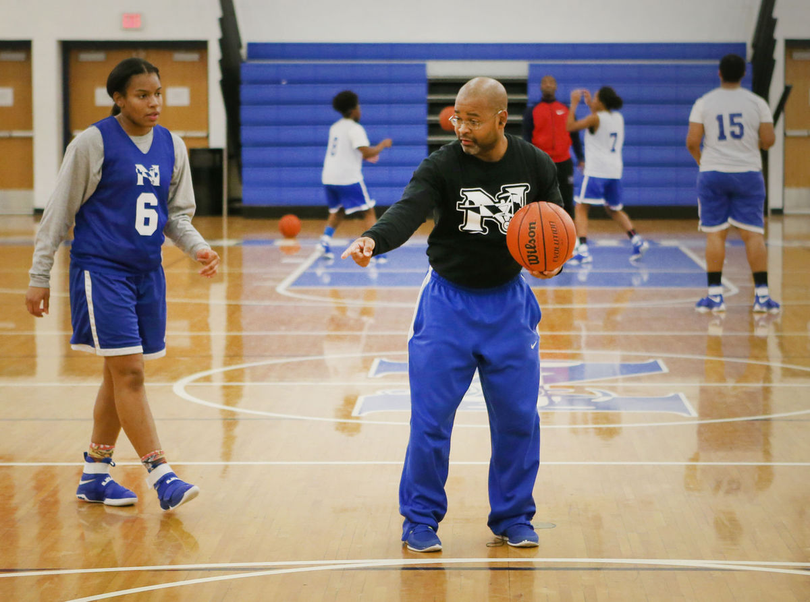

I played basketball as a young girl and i fell inlove with the game as i grew oldeder. But when i got in highschool my team wasnt good,and i ahd a huge fall out with the coaches so i stopped enjoying the game of basketball afterwards.But mys enior came around we got a new coach and and i fell inlove with the game i feltlike improved as a better person and i learned alot with my new head coach "Koach j", we made it to the final four and that was the first in a while. but now as i graduate i would to coach a grouopof girls and help the grow as a young lady and get better at basketball and make them love the game of basketball.
